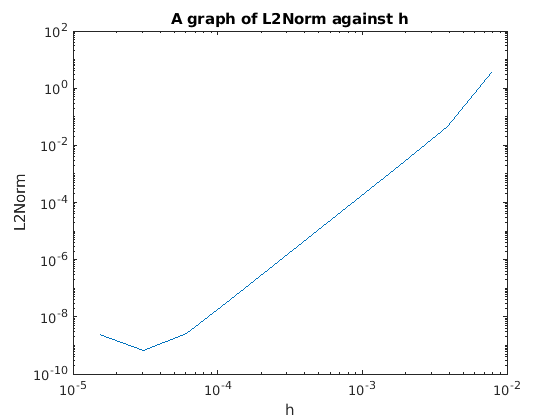

l=[7:16];
h=1./(2.^l);
k=150;
u0=1; u1=0;
L2Norm=zeros(10,1);
for ii=1:10
N=1/h(ii);
j=[1:N-1]';
x=h(ii)*j;
uaprox=numerical(k,h(ii),u0);
uexact=u_ex(x,k);
L2Norm(ii)=relat(uaprox,uexact);
end
loglog(h,L2Norm)
polyfit(log(h),log(L2Norm),1)
ylabel('L2Norm')
xlabel('h')
title('A graph of L2Norm against h')
fprintf('since the slope of the graph is 3.60697 which is approximately 4, hence the graph converges as O(h^4)')
function uexact=u_ex(xj,k)
c=1/k^2;
uexact=c+(1-c)*cos(k*xj)-(c+(1-c)*cos(k))*(csc(k))*sin(k*xj);
end
function uaprox=numerical(k,h,u0)
N=1/h;
j=[1:N-1]';
a=(1+(1/12)*(k*h)^2)/(h^2);
b=(-2+(5/6)*(k*h)^2)/(h^2);
xj=j/N;
f=zeros(N-1,1);
f(j)=1;
f(1)=f(1) - a*u0;
fcap=dst(f);
uc=2*a*cos(pi*j/N) + b;
ucap=fcap./uc;
uaprox=idst(ucap);
end
function Re=relat(uaprox,uexact)
error = (uaprox - uexact).^2;
Re=sqrt(sum(error)/sum(uexact.^2));
end
ans =
3.6097 16.7657
since the slope of the graph is 3.60697 which is approximately 4, hence the graph converges as O(h^4)